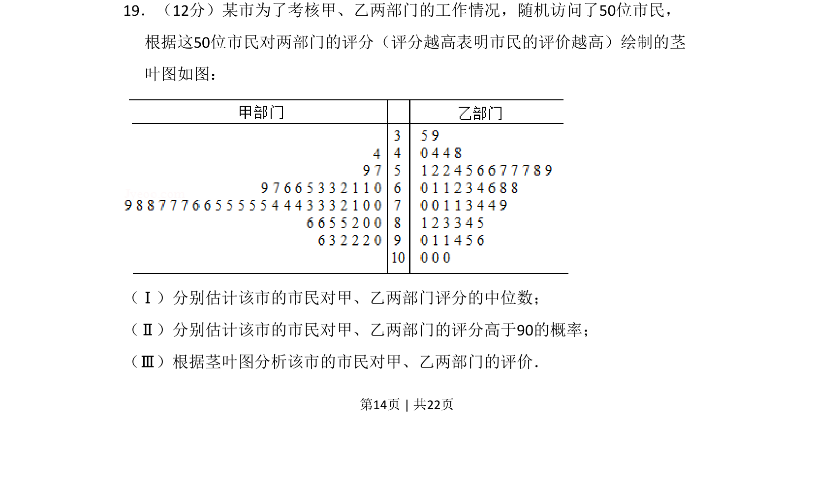
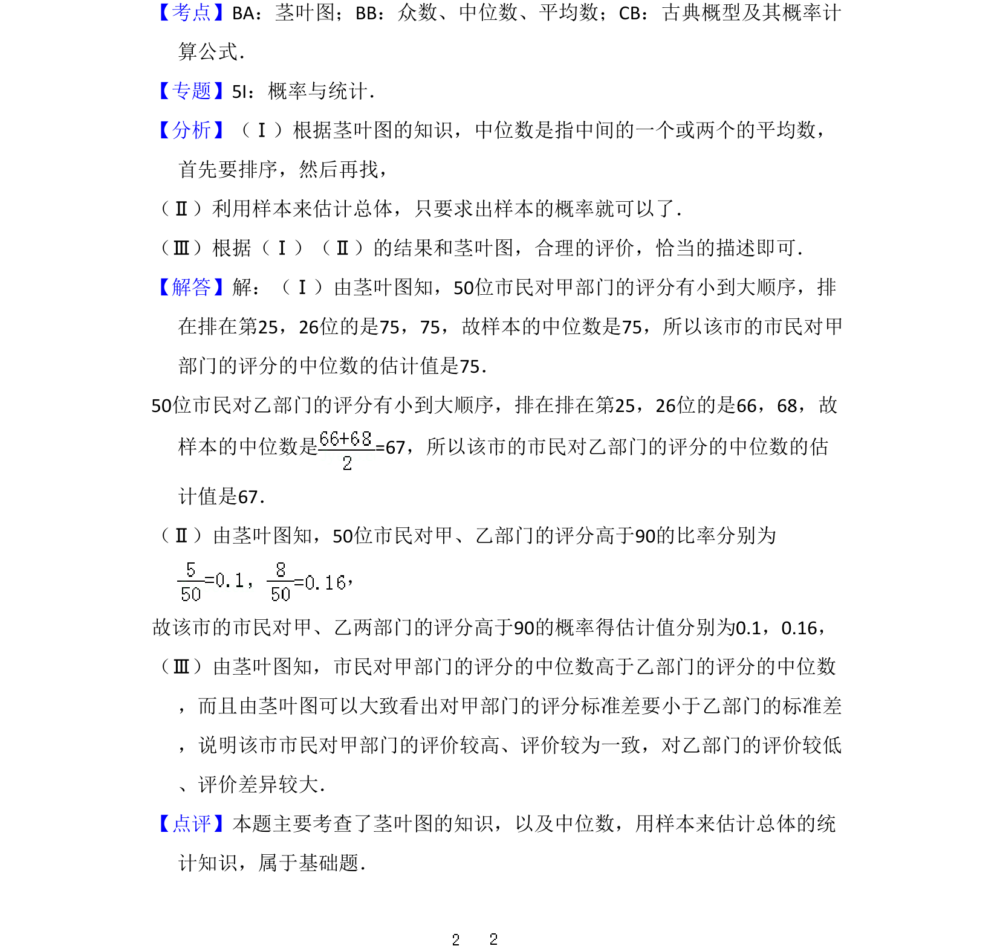

考点：茎叶图 中位数 概率估计 数据分析

该题通过茎叶图数据，考查中位数和概率的估计及数据评价分析能力。

📄 原 PDF 第 14 页：
素材/真题/吉林/2008-2024·（吉林）数学高考真题/2014年高考数学试卷（文）（新课标Ⅱ）（解析卷）.pdf
19．（12分）某市为了考核甲、乙两部门的工作情况，随机访问了50位市民， 根据这50位市民对两部门的评分（评分越高表明市民的评价越高）绘制的茎 叶图如图： （Ⅰ）分别估计该市的市民对甲、乙两部门评分的中位数； （Ⅱ）分别估计该市的市民对甲、乙两部门的评分高于90的概率； （Ⅲ）根据茎叶图分析该市的市民对甲、乙两部门的评价．